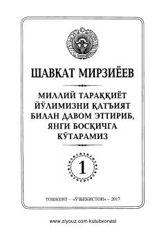

MTPrezident Shavkat Mirziyoyevning nutqlari jamlangan birinchi jild.
Ushbu kitob O'zbekiston Respublikasi Prezidenti Shavkat Mirziyoyevning 2016-2017 yillardagi muhim nutqlari, ma'ruza va tabriklarini o'z ichiga oladi. Unda mamlakatimizni demokratik yangilash, iqtisodiy islohotlarni chuqurlashtirish va milliy taraqqiyot yo'lini davom ettirish masalalari yoritilgan.